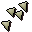
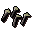
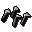

Bolt
| Config name | bolt |
| Item id | 877 |
| Value | 3 gp |
| Weight | 18g |
| Members | No |
| Tradeable | Yes |
| Stackable | Yes |
| Equip slot | quiver |
| Options | Wield |
| Category | bolts |
| Level required | 1 |
| Defined in | scripts/skill_combat/configs/ranged/bolts.obj |
| Equipment stats | Ranged str 10 |
Bolt
Good if you have a crossbow!
Show 13 ground spawns on the world map → Open in knowledge graph →
Used to make
| Skill | Level | XP | Ingredients | Tool | How | Where | Makes |
|---|---|---|---|---|---|---|---|
| Fletching | 11 | 1.6 |  Opal bolttips ×10, | use on item |  Opal bolt ×10 | ||
| Fletching | 41 | 3.2 | use on item |  Pearl bolt ×10 | |||
| Fletching | 51 | 9.5 | use on item |
Dropped by
| NPC | Level | Quantity | Rarity | Via | Notes |
|---|---|---|---|---|---|
| 2 | 2-12 | 11/64 (17.19%) | members | ||
| 2 | 2-12 | 11/64 (17.19%) | members | ||
| 2 | 2-12 | 11/64 (17.19%) | members | ||
| 2 | 2-12 | 11/64 (17.19%) | members | ||
| 2 | 2-12 | 11/64 (17.19%) | members | ||
| 2 | 2-12 | 11/64 (17.19%) | members | ||
| 16 | 2-12 | 11/64 (17.19%) | members | ||
| 15 | 2-12 | 11/64 (17.19%) | |||
| 14 | 2-12 | 11/64 (17.19%) | members | ||
| 2 | 2-12 | 11/64 (17.19%) | members | ||
| 9 | 2-12 | 11/64 (17.19%) | members | ||
| 5 | 2-12 | 11/64 (17.19%) | members | ||
| 5 | 2-12 | 11/64 (17.19%) | members | ||
| 6 | 2-12 | 11/64 (17.19%) | members | ||
| 5 | 2-12 | 11/64 (17.19%) | members | ||
| 4 | 2-12 | 11/64 (17.19%) | members | ||
| 4 | 2-12 | 11/64 (17.19%) | members | ||
| 4 | 2-12 | 11/64 (17.19%) | members | ||
| 2 | 1 | 1/16 (6.25%) | |||
| 10 | 2-12 | 7/128 (5.47%) | members | ||
| 20 | 2-12 | 7/128 (5.47%) | members | ||
| 9 | 2-12 | 7/128 (5.47%) | members | ||
| 2 | 8 | 3/128 (2.34%) | |||
| 5 | 8 | 3/128 (2.34%) | |||
| 13 | 8 | 3/128 (2.34%) | |||
| 42 | 8 | 3/128 (2.34%) |
Sold at
| Shop | Shopkeeper | Stock |
|---|---|---|
| Hicktons Archery Emporium. | 200 | |
| Armoury | 200 | |
| Gulluck and Sons | 150 | |
| Lowe's Archery Emporium | 1500 |
Ground spawns
| Area | Coordinates | Level | Count | Map |
|---|---|---|---|---|
| Bandit Camp | 3097, 3695 | 0 | 1 | view |
| Bandit Camp | 3099, 3684 | 0 | 1 | view |
| Bandit Camp | 3099, 3688 | 0 | 1 | view |
| Bandit Camp | 3101, 3702 | 0 | 1 | view |
| Graveyard of Shadows | 3105, 3679 | 0 | 1 | view |
| Graveyard of Shadows | 3105, 3694 | 0 | 1 | view |
| Graveyard of Shadows | 3109, 3691 | 0 | 1 | view |
| Graveyard of Shadows | 3109, 3697 | 0 | 1 | view |
| Graveyard of Shadows | 3112, 3682 | 0 | 1 | view |
| Graveyard of Shadows | 3114, 3690 | 0 | 1 | view |
| Graveyard of Shadows | 3116, 3701 | 0 | 1 | view |
| Market | 3028, 3259 | 1 | 1 | view |
| Rimmington | 3016, 3244 | 1 | 1 | view |
Quests
Referenced in scripts
scripts/_test/scripts/cheats/cheat_bank.rs2scripts/drop tables/scripts/dwarf.rs2scripts/drop tables/scripts/goblin.rs2scripts/drop tables/scripts/imp.rs2scripts/drop tables/scripts/man.rs2scripts/drop tables/scripts/rogue.rs2scripts/macro events/scripts/general/macro_event_maze.rs2scripts/quests/quest_crest/scripts/crest_johnathon.rs2scripts/quests/quest_legends/scripts/nezikchened.rs2scripts/quests/quest_legends/scripts/ungadulu.rs2scripts/skill_fletching/scripts/bolts.rs2